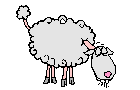

Je me nomme André MENET et vous souhaite la bienvenue sur mon site

Ma devise :
"Si tu ne peux pas tout ce que tu veux, sache vouloir ce que tu peux"
Je suis né le 22 septembre 1934 à Echillais et depuis mon mariage en 1955, j'habite Soubise.
J'ai plusieurs expériences :
Celle du professionnel :
Après mon service militaire à Madagascar et en Algérie, je fus agriculteur-éleveur, engagé dans la sélection et les organisations professionnelles agricoles, départementales et nationales. Fondateur, avec quelques passionnés, de la race Mouton-Vendéen, j'en ai assuré la présidence pendant trente ans, jusqu'en 1996. Je fus aussi président, de 1981 à 1984, de la Fédération Nationale Ovine (FNO) et de l'Institut Technique Ovin et Caprin (ITOVIC), puis de 1986 à 1997, de l’Association Nationale des Livres Généalogiques Ovins (ALGO), 147 rue de Bercy , Paris, 12e.
Celle du bénévole au service de son prochain :
De 1994 à 2011, j’ai été Vice-Président national ou secrétaire général puis président de l’Association des Usagers de l'Administration (ADUA) dont le siège social est à Paris. Depuis ma retraite, je milite pour le développement agricole de Madagascar dans le cadre de l'association Agriculteur Français de Développement International (AFDI), anciennement Paysans sans Frontière et à l'Union Nationale des Retraités et des Personnes âgées (UNRPA) dont j'ai assuré la présidence des 480 adhérents de la section de St-Agnant de 2007 à 2013. J’ai milité pendant six ans au sein du bureau de l'Association Représentant les Usagers du Centre Hospitalier de Rochefort (ARUCHR), pour faciliter les relations entre les usagers et l'hôpital et encourager la prévention des maladies nosocomiales
Celle de la société contemporaine :
- Essayiste économique et social et auteur de 'Faisons l'économie du Chômage', que j’ai publié en 1993 pour expliquer ce qu’il allait devenir : le cancer de la France. Tant que la France importera plus qu’elle exporte, ce que ni vous, ni moi, ne pouvons-nous permettre, la crise persistera. Avec 5% de chômeurs en moins et 5% de cotisants à la Sécu en plus, nos comptes sociaux seraient plus faciles à gérer et nous importerions moins. Sur les 32 milliards de la formation professionnelle seulement 2 milliards forment les chômeurs pour leur permettre de trouver un nouvel emploi et le reste gave les syndicats !
- Témoignage par la rédaction d’une monographie sur l'Histoire locale de Echillais et de Soubise de 1900 à 2000 développées dans leur chapitre spécifique ci-dessous.